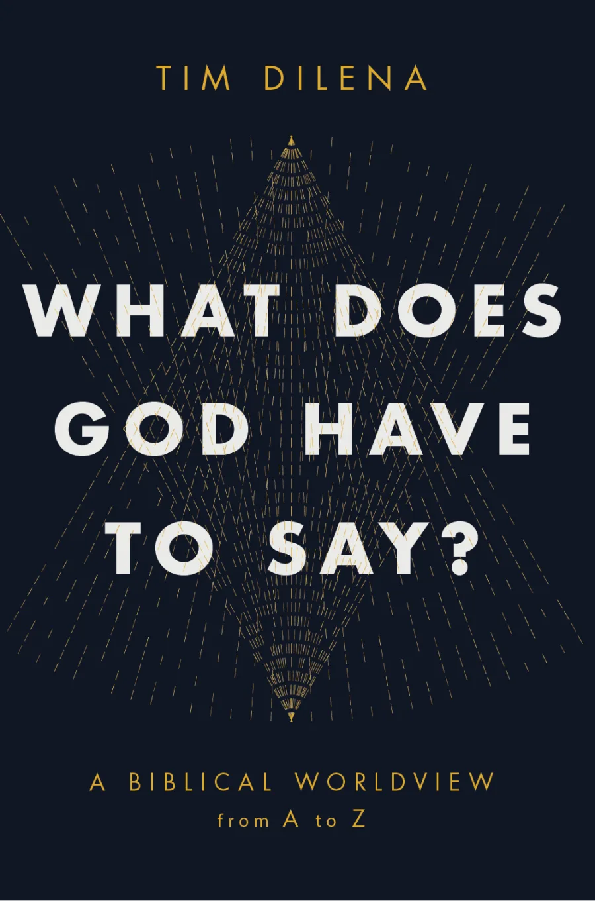
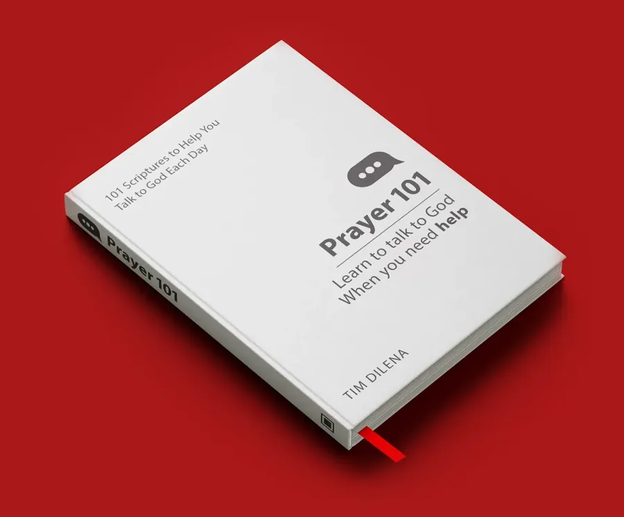
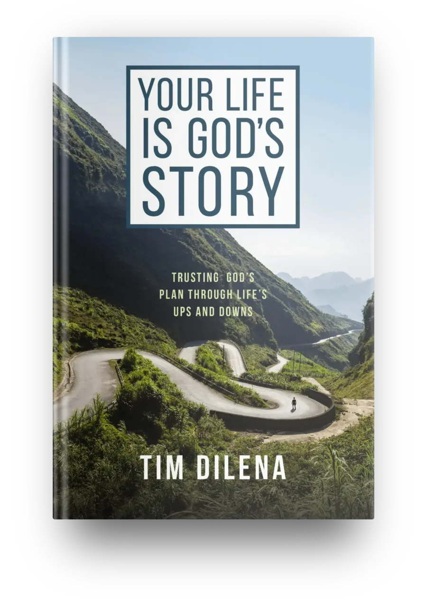
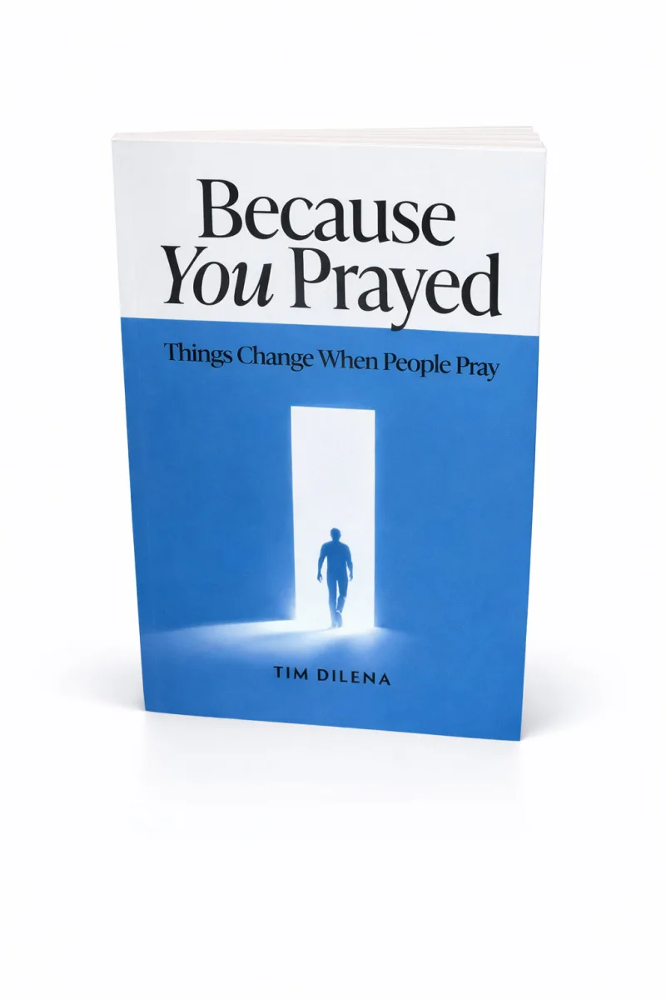
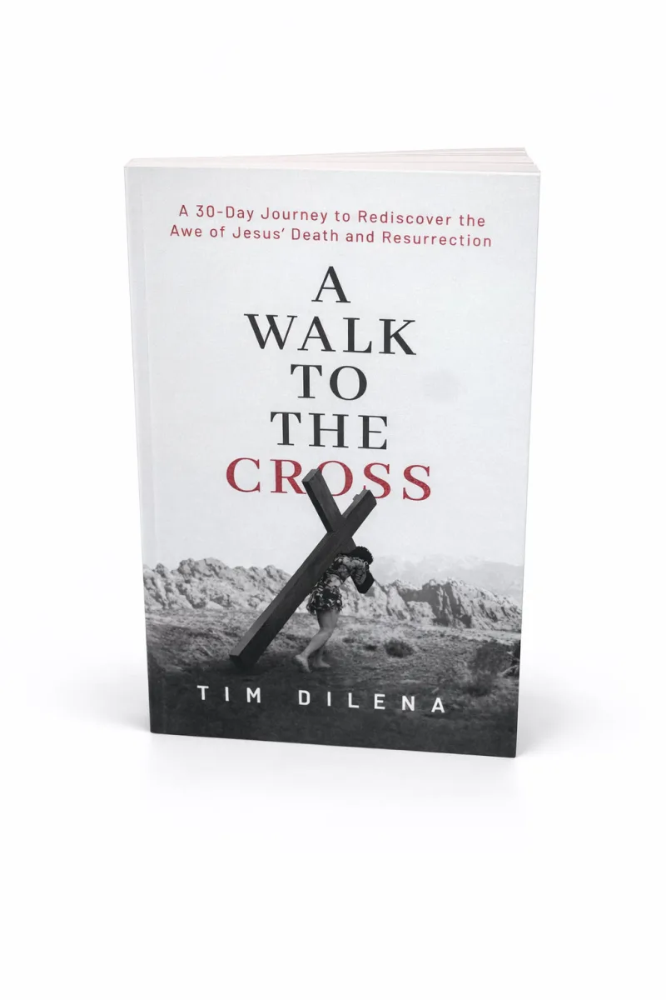
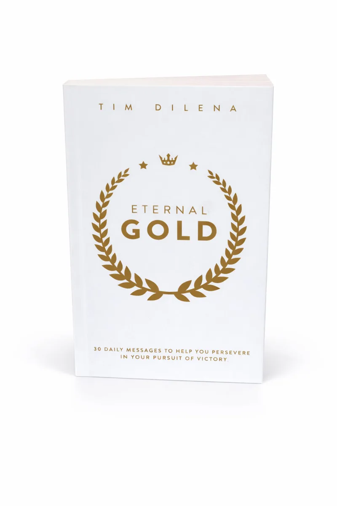

Books.
By Pastor Tim Dilena, at the TSC store.

New
What Does God Have to Say?
A Biblical Worldview from A to Z
A compelling call to embrace God’s perspective and rediscover the enduring truths of the Bible, in 26 chapters from A to Z.
“There is still Truth. Solid, proven and directional truth.”
More books.

Prayer 101 101 Scriptures to pray when you need help. Pocket-sized, in white or brown leather.
Your Life is God’s Story Biblical stories and testimonies that encourage faith in God’s plan for your life.
Because You Prayed How seeking God’s face can change circumstances, hearts and even destinies.
A Walk to the Cross A devotional to see the season of the cross with fresh eyes.
Eternal Gold A 30-day devotional.- The 260 Journey Through the New Testament, one chapter a day, Monday through Friday.